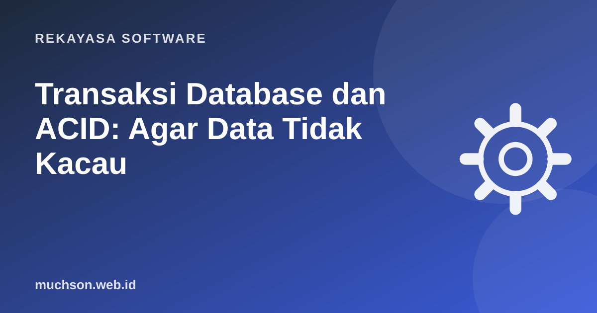

Beranda › Artikel › Rekayasa Software
Rekayasa SoftwareTransaksi Database dan ACID: Agar Data Tidak Kacau
Bayangkan aplikasi memotong saldo Ani, lalu server mati sebelum saldo Budi ditambah. Uang hilang. Atau dua pembeli menekan "Beli" bersamaan untuk stok terakhir, dan keduanya berhasil. Transaksi database ada untuk mencegah kekacauan seperti ini.

Transaksi: semua atau tidak sama sekali
BEGIN;
UPDATE rekening SET saldo = saldo - 100000 WHERE id = 'ani';
UPDATE rekening SET saldo = saldo + 100000 WHERE id = 'budi';
COMMIT; -- kedua perubahan tersimpan bersama
-- bila ada error di tengah:
ROLLBACK; -- semua perubahan sejak BEGIN dibatalkanEmpat sifat ACID
Race condition: musuh yang tidak terlihat saat uji coba
Di laptop developer, satu orang mengklik satu kali. Di produksi, ratusan permintaan datang bersamaan. Pola "baca, hitung di aplikasi, tulis" rentan:
// Rentan: dua permintaan bisa membaca stok = 1 bersamaan
const { stok } = await db.query('SELECT stok FROM produk WHERE id = $1', [id]);
if (stok > 0) {
await db.query('UPDATE produk SET stok = $1 WHERE id = $2', [stok - 1, id]);
}Solusi 1: biarkan database yang menghitung
UPDATE produk SET stok = stok - 1
WHERE id = $1 AND stok > 0
RETURNING stok;
-- bila tidak ada baris yang kembali, stok sudah habisSolusi 2: kunci baris di dalam transaksi
BEGIN;
SELECT stok FROM produk WHERE id = $1 FOR UPDATE; -- transaksi lain menunggu
-- periksa dan proses pembayaran, buat pesanan...
UPDATE produk SET stok = stok - 1 WHERE id = $1;
INSERT INTO pesanan (...) VALUES (...);
COMMIT;Pertahanan berlapis
Tambahkan juga constraint di database, misalnya CHECK (stok >= 0) dan CHECK (saldo >= 0). Constraint adalah penjaga terakhir bila ada bug di kode aplikasi.
Tingkat isolasi
| Tingkat | Mencegah | Catatan |
|---|---|---|
| Read Committed | Membaca data yang belum di-commit | Default PostgreSQL. Cukup untuk sebagian besar kasus bila dipadu UPDATE atomik atau FOR UPDATE. |
| Repeatable Read | + pembacaan ulang yang berubah di tengah transaksi | Default MySQL InnoDB. |
| Serializable | Semua anomali konkurensi | Paling ketat; aplikasi harus siap mengulang transaksi yang gagal. |
Di framework
Hal yang tidak boleh dilakukan di dalam transaksi
- Memanggil API eksternal yang lambat (payment gateway, email) sambil memegang kunci. Lakukan sebelum atau sesudah, atau pakai antrean.
- Transaksi yang terbuka berlama-lama, misalnya menunggu input pengguna.
- Lupa ROLLBACK pada jalur error sehingga koneksi tertahan.
Tanya jawab
Apakah NoSQL mendukung transaksi?
Banyak yang sekarang mendukung, misalnya MongoDB (multi-document transactions) dan Firestore. Cakupan dan batasannya berbeda dari database relasional.
Apa itu deadlock?
Dua transaksi saling menunggu kunci yang dipegang yang lain. Database akan membatalkan salah satunya; aplikasi sebaiknya mengulang. Mengunci baris dengan urutan yang konsisten mengurangi risikonya.
Bagaimana dengan transaksi lintas layanan (microservices)?
Biasanya memakai pola saga: rangkaian langkah lokal dengan langkah kompensasi bila ada yang gagal.
Sumber dan bacaan lanjut
- PostgreSQL Docs: Transactions (tutorial)
- PostgreSQL Docs: Transaction Isolation
- Laravel Docs: Database Transactions